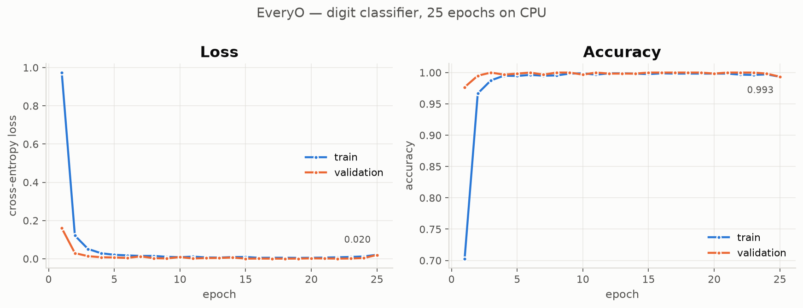

Read the mechanics.
Trace reverse-mode differentiation, inspect NumPy kernels, and follow the maths into the code.
Read autogradTHE OPEN-SOURCE NEURAL COMPUTING FRAMEWORK
From your first tensor to your own transformer. A readable Python framework built on NumPy, for developers who want to see how it all works.
YOUR CURIOSITY.
THE WHOLE STACK.
01 / BUILT TO BE UNDERSTOOD
A framework you can run, read, and reason about. Follow the implementation from the first forward pass to the final parameter update.
Trace reverse-mode differentiation, inspect NumPy kernels, and follow the maths into the code.
Read autogradGenerate datasets locally, set your seeds, and train small models without an account or API key.
Find an experimentExplore finite-difference tests and optional TensorFlow reference comparisons. Understand what was validated.
See validation02 / A FEW LINES. A REAL GRADIENT.
Mark a tensor, perform an operation, and call backward(). EveryO records the graph and accumulates the gradient.
import everyo as eo
x = eo.tensor([2.0], requires_grad=True)
y = x * x
y.backward()
print(x.grad) # [4.]
Documented examples. Python runs on your machine, not in this page.
03 / ONE READABLE STACK
The same NumPy foundation takes you from tensor arithmetic to convolution and attention.
04 / EXPERIMENTS YOU CAN REPRODUCE
Explore the training curves and decision boundaries produced by the framework’s own examples.
Accuracy on 600 held-out digits
Reported example run · CPU · 17,226 parameters
An example-run measurement, not a benchmark or performance guarantee. Results depend on hardware and configuration.
Reproduce the digit experiment
05 / MADE FOR THE CURIOUS
Choose a starting point. Make a small change. See what happens.
Start with tensors and understand why the derivative of x² is 2x.
Learn the fundamentalsBuild a classifier, visualize a decision boundary, or inspect an attention head.
Explore examplesBring a reproducible bug, clearer docs, or a well-tested implementation.
Meet the projectFROM “HOW DOES IT WORK?” TO “I BUILT THIS.”